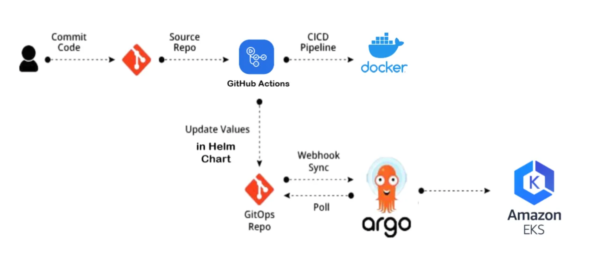

Welcome to My DevOps Project
This project demonstrates the complete DevOps lifecycle, including building, deploying, and managing applications using modern tools.
Check out the project repository on GitHub:
Project Workflow
- Develop a simple **Go Web Application**
- Dockerize the application and push to **Docker Hub**
- Define **Kubernetes manifests** to deploy the app
- Use **Helm charts** for easy deployment
- Automate CI/CD using **GitHub Actions**
- Deploy to **Kubernetes cluster using ArgoCD**
Workflow Diagram
Below is the high-level work flow
